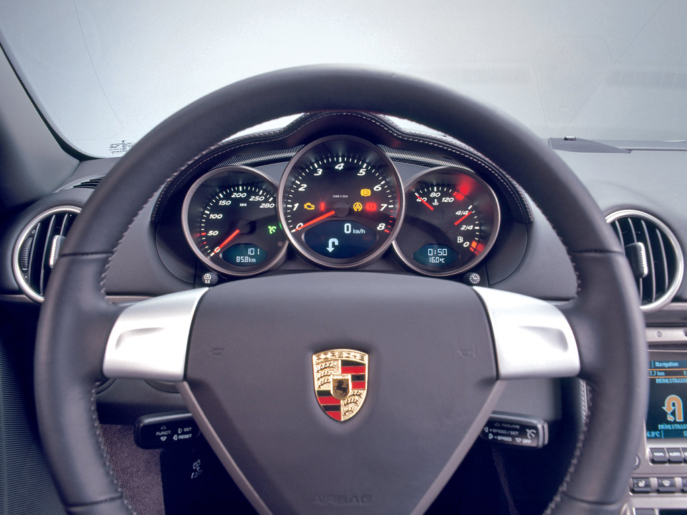
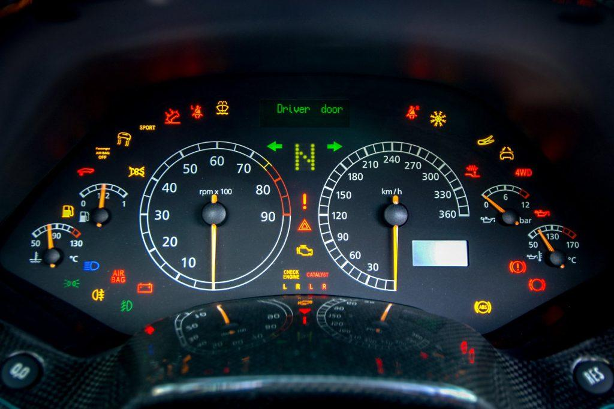
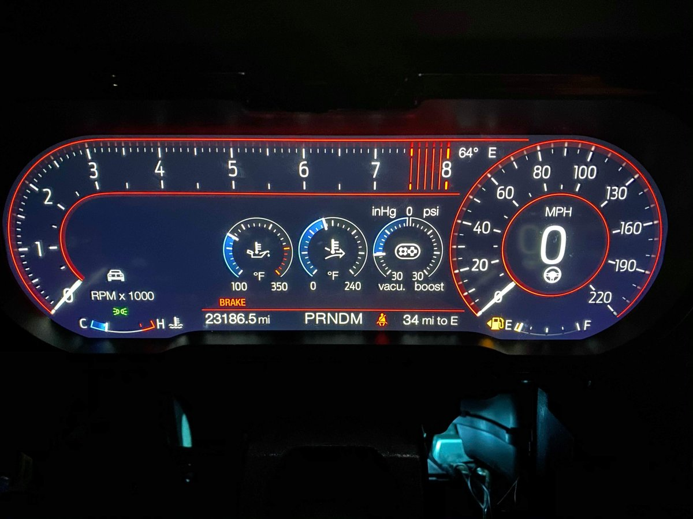
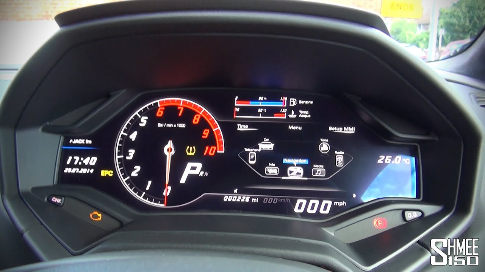
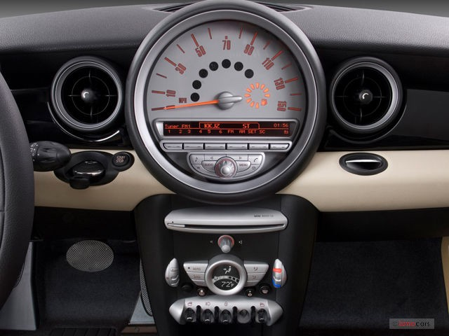

CS 4331 Project 2 Submission
Adeetya Kulkarni
Answers for C:
Car dashboard design study

Pros -
-
Well seperated functionality -
The fuel indicator, speedometer and revs/min meter are in a seperate segregated circles. -
Good use of bottom LED display -
The LED display has the units and the value of what is being measured in each circle.
Cons -
-
Ambiguious functionality of the bottom two buttons -
The symbols on the bottom two buttons as well as their positions creates ambiguity in understanding their purpose. -
Warning symbol arrangement -
The warning symbols are arranged arbitrarily and hard are to read.

Pros -
-
Well arranged warning symbols -
The warning symbols are arranged near their respective machine readings to better indicate what the symbol is connected to. -
Properly marked and easily visible speedometer and tachometer -
Both the meters are properly visible and have theie respective units displayed. The tachometer also has color co-ordination to explain the danger of overspeeding.
Cons -
-
Too much information in too little space -
There is some information overload with so many symbols that some of them become redundant like the gas symbol repeated near the gas symbol. -
Too many reading meters -
There is a seperate meter for the water level, water temperature, engine temperature, Gas. All of these could have just been LED number notations.

Cons -
-
Confusing placement of information -
The gas symbol is confusing to read, the 34 mi to E is not understood. - Space not optimized -
Not much important information has been given too much importance. Which leaves very less space for the warning symbols.

Cons -
-
Crowded information-
The information is so crowded and unreadable that the warning symbols are outside the main dashboard screen. - Redundant information -
Considering that there is a shortage of space, information such as the date and time can be avoided .

Cons -
-
Inadequate information-
The dashboard only provides the information of the speed of the car and the fuel, does not display any waening signs. -
Tachometer design-
The tachometer is very hard to spot and understand, without the values.
Answers for B:
Questions regarding car dashboard
- List your most common features and other rarer uses of a car dashboards.
- Current speed of the car.
- The level of fuel in the fuel tank along with fuel empty warning symbol.
- Indicator signals, headlights, fog-lights, parking lights (on/off).
- Seat belt indicator, door unlocked indicator.
- The number of miles the car has travelled.
- Display the current driving mode or gear.
- Revs/min of the car.
- Warning symbols (engine, tire pressure etc.)
- Current time.
- Current temperature of the car/ outside temperature.
- List the controls that the user interacts with the car dashboards.
- Acceleration, Brakes – Interacts with speedometer.
- Gear – Interacts with current drive mode/gear number.
- Indicator control – Turns on the indicator display symbol (left or right).
- Parking light button – Toggles parking lights.
- Windshield wipers toggle and spray fluid – toggles wipers or sprays fluid over windshield.
- Headlight, taillight, fog light knob – Toggles headlight, taillight and fog-light (high beam).
- Open/close door – Toggles the door open warning symbol.
- Seat belt on/off – Toggles the seatbelt warning symbol.
- What are some common mistakes you can make with this current designs?
- Tachometer and speedometer not properly placed. Warning lights/symbols are arbitrarily placed and ambiguous. The measurement symbols are not visible or difficult to read. The fuel reading is difficult to understand. Lack of information or information overload on the dashboard are some common mistakes you can make with these current designs.
- Low fidelity prototype
Common features -
To display :
Rarer features –
To display :